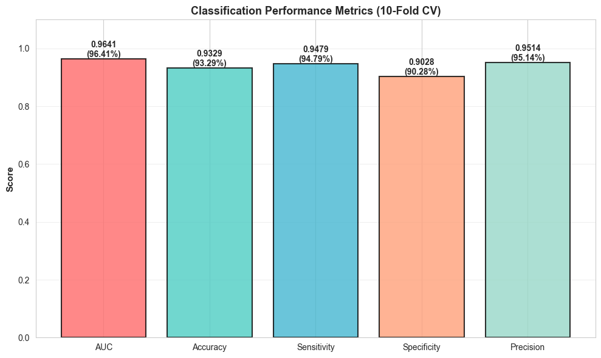
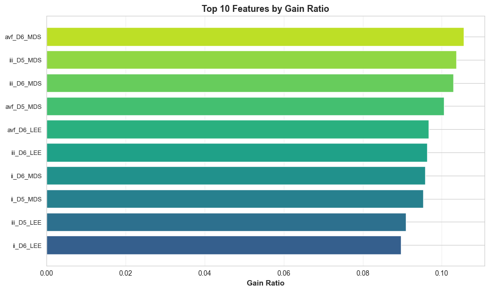
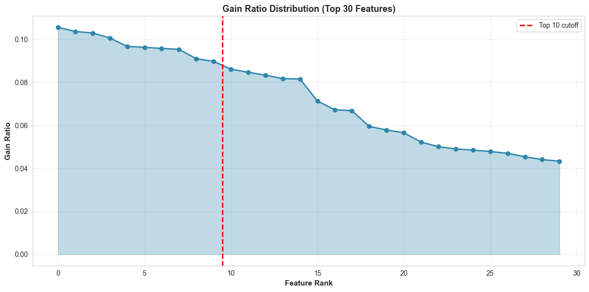
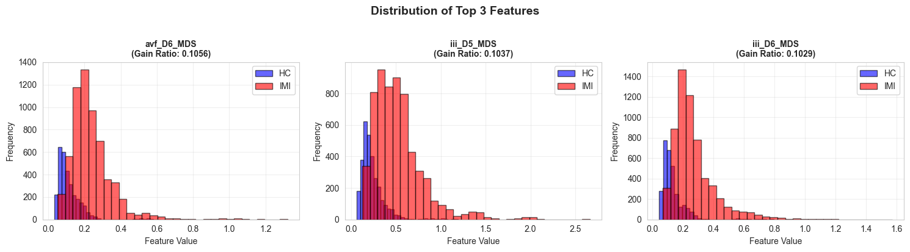

Myocardial Infarction Detection Results
Generated: 20251001_132838
Dataset Information:
Total Segments: 9175 | HC: 3055 | IMI: 6120
Performance Metrics (10-Fold Cross-Validation)

Top 10 Selected Features
| Rank |
Feature |
Gain Ratio |
| 1 |
avf_D6_MDS |
0.105561 |
| 2 |
iii_D5_MDS |
0.103658 |
| 3 |
iii_D6_MDS |
0.102947 |
| 4 |
avf_D5_MDS |
0.100626 |
| 5 |
avf_D6_LEE |
0.096722 |
| 6 |
iii_D6_LEE |
0.096264 |
| 7 |
ii_D6_MDS |
0.095764 |
| 8 |
ii_D5_MDS |
0.095336 |
| 9 |
iii_D5_LEE |
0.090981 |
| 10 |
ii_D6_LEE |
0.089728 |


Feature Distributions

Reference
Paper: Sharma & Sunkaria (2018) - Inferior myocardial infarction detection using stationary wavelet transform and machine learning approach
Paper Results (Class-oriented KNN): ROC=0.9945, Se%=98.67, Sp%=98.72, +P%=98.79, Ac%=98.69